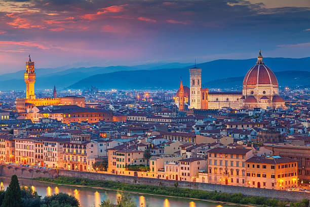

Berço da Renascença, como é conhecida a cidade de Florença, a capital da Toscana foi construída às margens do rio Arno por romanos em meados de 395 a.C., sobre as ruínas de um antigo acampamento etrusco. A capital da Itália, Roma, está 273 km ao sul de Firenze, enquanto a costa do Mar da Ligúria fica a apenas 78 km de distância.
Florença é uma cidade única. Nenhuma outra cidade italiana tem a mesma riqueza histórica representada em museus e galerias. Foi em Florença que trabalharam Dante, Michelango, Medicis entre outros que contribuíram para a Idade de Ouro florentina. Fundada em 59 a.C, Florença foi durante muito tempo reconhecida como a capital da moda. É considerada o berço do Renascimento italiano e uma das cidades mais belas do Mundo, e que abriga 30% dos tesouros artísticos da humanidade, segundo a Unesco. Eu concordo, Firenze, como dizem os Italianos é indescritível. A capital da Toscada ainda ficou famosa por ser a cidade natal Dante Alighieri, autor da Divina Comédia, que é um marco da literatura universal.
Em sua origem, Florença era um acampamento fortificado situado na encruzilhada que formavam os caminhos da costa do Tirreno e os dos Apeninos, unidos para percorrer o alto vale do Arno até Roma. Originalmente Florença era uma cidade etrusca, dependente de Faesulae (Fiesole). Os etruscos, chegados da Ásia Menor, se estabeleceram na zona no século IV a.C. Os objetos e restos arqueológicos encontrados nos permitem datar a presença desta civilização na área florentina, como comprovam as extraordinárias coleções de arte etrusca conservadas no Museu Arqueológico de Florença. Em 395 a.C., a civilização etrusca ficou subordinada a Roma. Foi então que, durante as campanhas de colonização de Silla, os romanos fundaram o município de Florentia, sobre as cinzas do antigo assentamento etrusco. Na Idade Média, devido à riqueza agrícola e à sua posição como centro de comunicações, chegou a eclipsar Faesulae. Os lombardos tiveram o controle da cidade durante a alta Idade Média.